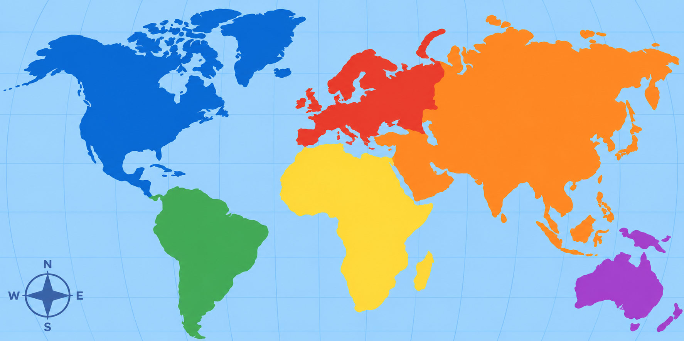

The world is full of stories
Choose a continent.
Choose a continent, find a country, and discover three historic landmarks and their stories.


Select a continent to explore
The world is full of stories
Choose a continent, find a country, and discover three historic landmarks and their stories.
